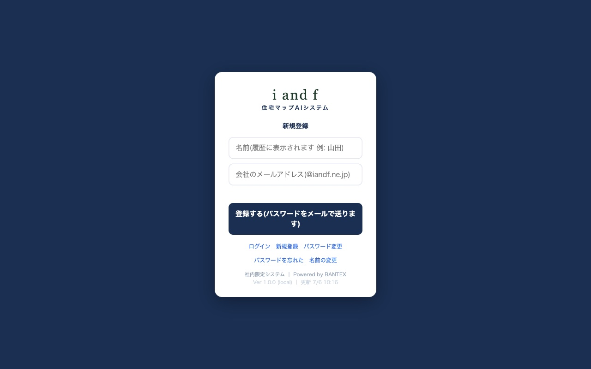
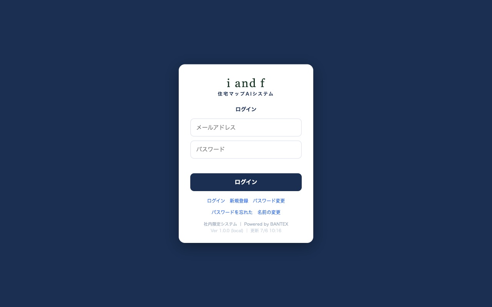
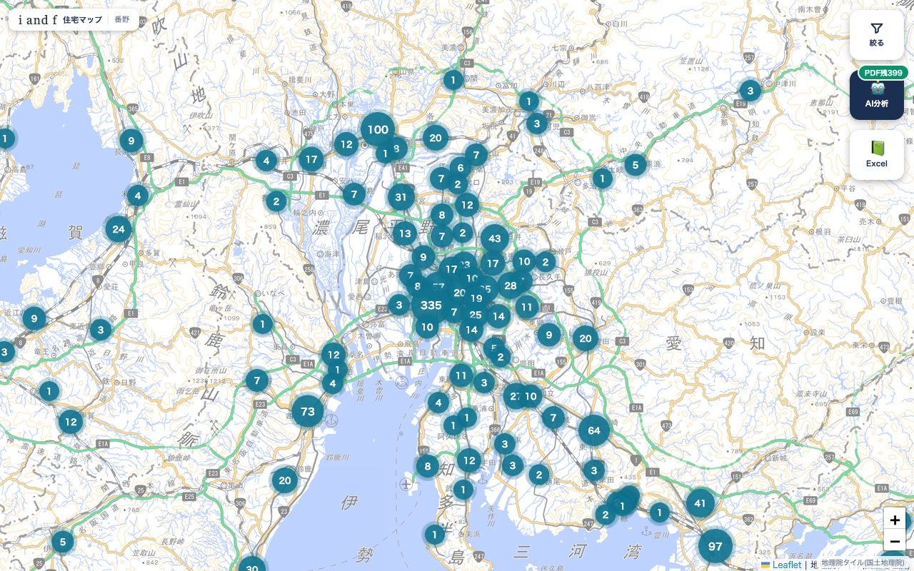
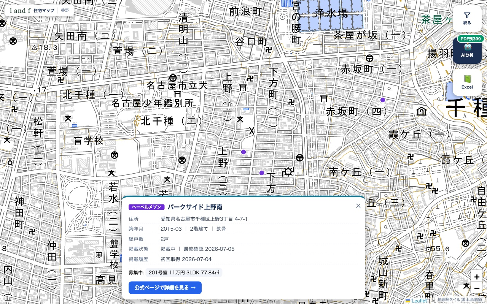
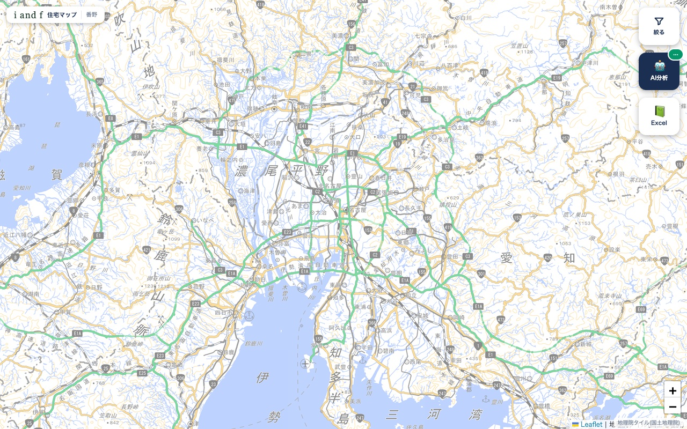
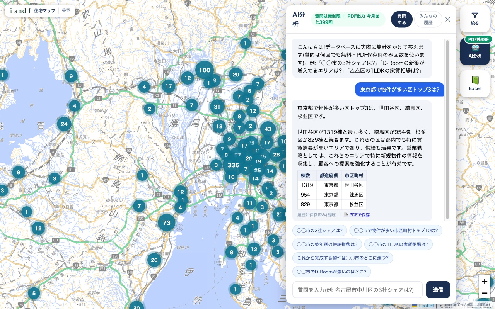
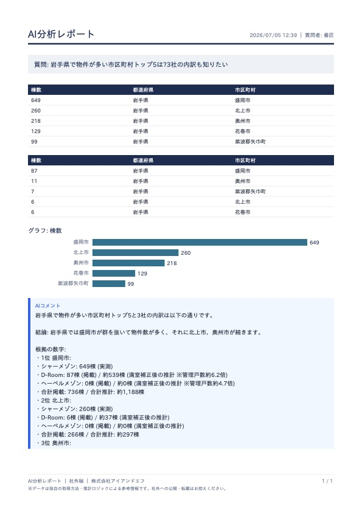
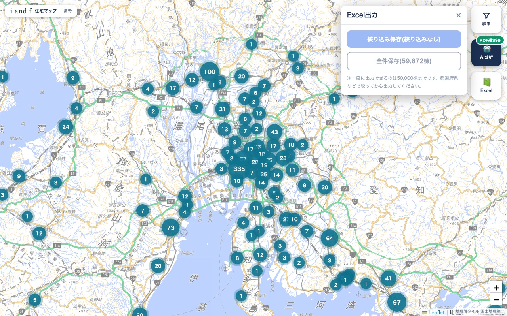
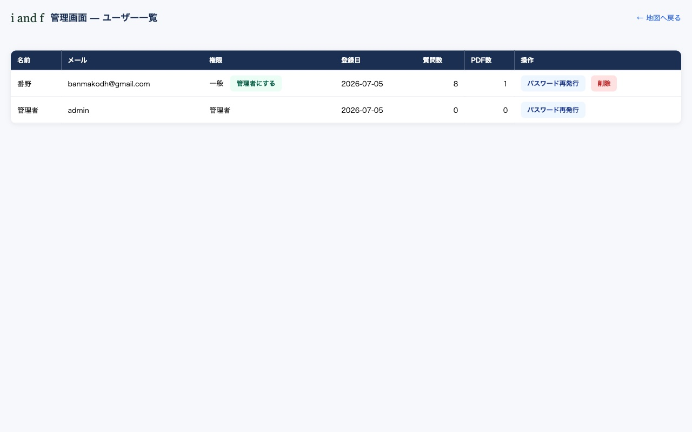

このシステムでできること
シャーメゾン・D-Room・ヘーベルメゾンの全国の賃貸物件を1つの地図で見られる、社内専用のシステムです。
スマホでもパソコンでも、下のアドレスを開くだけで使えます。
📍 アドレス: https://iandf-jutaku-map.onrender.com(ブックマーク登録がおすすめです)
1. はじめて使う(登録)
最初の1回だけ、自分の登録をします。1分で終わります。
- 上のアドレスを開き、画面下の「新規登録」を押す
- 名前(履歴に表示されます。例: 山田)と会社のメールアドレス(@iandf.ne.jp)を入れる
- 「登録する」を押す → パスワードがメールで届きます
- 届いたパスワードでログイン(パスワードは後から自分の好きなものに変えられます → 9章)

新規登録は名前とメールの2つだけ。会社のメールアドレス以外では登録できません
2. ログイン
- メールアドレスとパスワードを入れて「ログイン」
- 一度ログインすれば、同じ端末では30日間そのまま使えます

⏰ 朝いちばん等にページがすぐ開かない・「Not Found」と出ることがあります。30秒ほど待って再読み込みすれば開きます(サーバーの目覚まし時間です)。
3. 地図の見かた
画面は地図が全面。ボタンは右(スマホは下)の3つだけです。

引いて見ると、市区町村ごとの物件数が丸い数字で表示されます
- 丸い数字 = そのエリアの物件数。押すとそのエリアへズームします
- ズームすると1棟ずつのピンに変わります(●シャーメゾン / ●D-Room / ●ヘーベルメゾン)
- 右上の3つのボタン: 絞る(条件をしぼる)・AI分析(質問する)・Excel(一覧を保存)
4. 物件の詳細を見る
- 地図のピンを押す
- 画面下に詳細カードが出ます: 住所(番地まで)・築年月・階建・構造・総戸数・掲載状態・募集中の部屋(家賃・間取り・広さ)
- 「公式ページで詳細を見る」を押すと、そのメーカーの公式サイトの物件ページが開きます

「掲載履歴」で、いつから載っているか・過去に満室になったことがあるかも分かります
5. 絞り込み
- 「絞る」ボタンを押す
- メーカーのチェック・都道府県・市区町村・築年・「空室のある物件のみ」を選ぶ
- 選んだ瞬間に地図が変わります(適用ボタンを押す必要はありません)

💡 ドロップダウンの地名の横の( )は物件数です。メーカーのチェックを変えると数字も変わるので、「どこに多いか」を見ながら選べます。一番下のボタンには今の条件の合計棟数が出ます。
6. AIに質問する
データベースに実際に集計をかけて、数字で答えてくれます。質問は何回でも無料です。
- 「AI分析」ボタンを押す
- 下の青いボタン(定型質問)を押すか、自由に文章で質問を入れる(例:「刈谷市の3社シェアは?」)
- 「送信」を押す(エンターキーでは送信されません) → 数秒〜十数秒で表つきの回答が返ります
- 回答は自動で「みんなの履歴」に保存され、他のメンバーの分析も見られます

💡 「絞る」で市区町村を選んでいると、定型質問の「◯◯市」がその地名に自動で変わります。
7. 分析結果をPDFで保存する
- AIの回答の下の「📄 PDFで保存」を押す
- グラフ入りのA4レポート(1枚)がダウンロードされます。そのまま印刷や共有に使えます

PDFレポートの例。質問・集計表・グラフ・AIのコメントが1枚にまとまります
📄 PDF出力はチーム全体で月400枚までです(AI分析ボタンの緑のバッジに残り枚数が出ています)。同じ分析のPDFをもう一度ダウンロードするのは枚数を使いません。質問だけなら何回でも無料です。
8. Excelで一覧を保存する
- 「Excel」ボタンを押す
- 「絞り込み保存」(いまの条件の物件だけ)か「全件保存」を選ぶ — どちらも件数が表示されます
- Excelファイルがダウンロードされ、そのまま開けます(文字化けしません)

住所(番地)・築年月・階建・構造・最寄駅・家賃・座標・公式リンクまで全項目入りの一覧です
9. 困ったとき
| こんなとき | こうしてください |
|---|
| パスワードを自分の好きなものにしたい | ログイン画面の「パスワード変更」→ メール・今のパスワード・新しいパスワードを入力(控えがメールで届きます) |
| パスワードを忘れた | ログイン画面の「パスワードを忘れた」→ メールを入力 → 届いたメールのリンク(1時間有効)から再設定 |
| 表示される名前を変えたい | ログイン画面の「名前の変更」から |
| ログアウトしたい | 地図画面の左上の自分の名前を押す |
| ページが開かない/「Not Found」 | 30秒待って再読み込み(朝いちばん等に起こります) |
10. 管理者の方へ
管理者の権限があると、地図画面の左上に「管理」リンクが表示され、管理画面が使えます。
- ユーザー一覧: 名前・メール・権限・質問数・PDF数が見られます
- パスワード再発行: 忘れた人に新しいパスワードを発行してメールで届けます
- 権限の変更: メンバーを「管理者にする/一般にする」を切り替えられます
- 削除: 退職者などのアカウントを削除できます(分析履歴は名前つきで残ります)

管理画面。管理者用のログイン情報は担当者(バンテックス)からお伝えします
🔒 このシステムのデータは社外秘です。画面・PDF・Excelを社外の方に見せたり渡したりしないでください。
データは独自の取得方法・推計による参考情報で、各メーカー公式発表の数値と異なる場合があります。